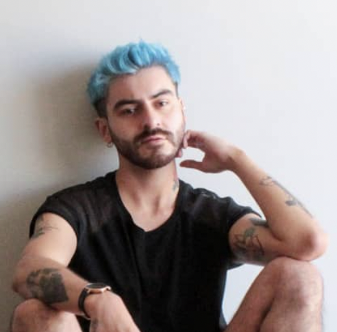

Curriculum Vitae



Yerko Andrés Rojas Rivera
Resumen
Hola estimados, soy Yerko Rojas, tengo 30 años y nací originalmente en el norte de Chile, en la ciudad de Arica.
Si bien estudié dos años Derecho al salir de cuarto medio (2010), tras un año solo trabajando y preparando PSU
ingresé a Publicidad en la ciudad de Viña del Mar donde terminé el 2017. De ahí a la fecha he estado trabajando
ligado al Marketing Digital tanto en agencias como en el marketing interno de empresas.
Datos personales
- Nombre completo: Yerko Andrés Rojas Rivera
- Email: yerko.andresrr@gmail.com
- Teléfono: +56968420138
- Dirección: Obispo Salas #243, depto 442, Providencia, Región Metropolitana
- Fecha de nacimiento: 12 / Febrero / 1993
Formación
- Desarrollo Web Full Stack - Desafío Latam, Online
Julio 2023 - Junio 2024 (en proceso)
- Publicidad - Duoc UC, Sede Viña del Mar
Marzo 2013 - Diciembre 2017
- Derecho - Universidad de Tarapacá, Arica
Marzo 2011 - Diciembre 2012 (incompleto)
Experiencia laboral
- Paid Media Leader | Scrum Master - Rebold Chile
Junio 2022 - A la actualidad
- Paid Media Manager and Metrics - AFP Cuprum
Julio 2021 - Junio 2022
- Paid Media Manager - iProspect Chile
Enero 2020 - Junio 2021
- Omnicom Mediagroup
Julio 2018 - Diciembre 2019
- MediaInteractive - Planificador Digital
- Hearts & Science - Planificador Digital JR
- Hearts & Science - Asistente Digital
- Asistente Cross Media - Carat
Diciembre 2017 - Junio 2018